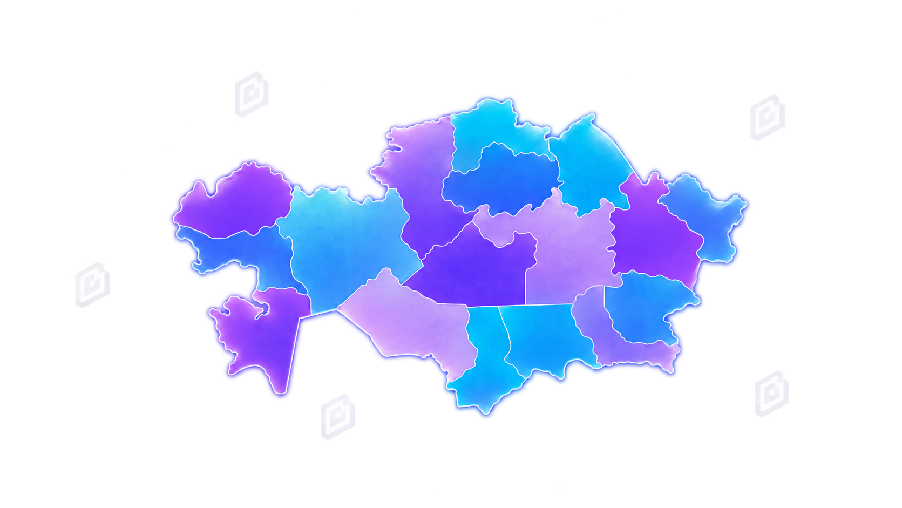
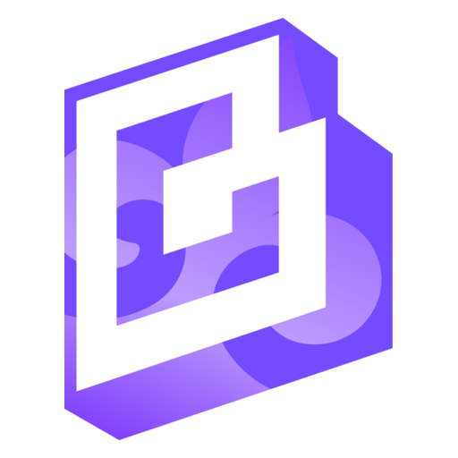

Изображение
Объявление
Новый этап проекта ChatGPT EDU Kazakhstan
Здесь будет короткий анонс события или важного обновления проекта.
Инструменты, методические материалы, обучение и профессиональное сообщество для ответственного применения искусственного интеллекта в образовании Казахстана.

Инструменты для подготовки учебных материалов
Готовые запросы для учёбы и работы
Проекты и профессиональные инициативы
Обучение, практикумы и записи встреч
Новости и полезные внешние ресурсы
Масштаб проекта и динамика развития
Эксперты, лидеры и наставники
Практические материалы педагогов
Здесь будет короткий анонс события или важного обновления проекта.
Карточка вебинара со спикером, языком проведения и ссылкой.
Место для новых инструкций, записей и материалов для педагогов.
Помогаем освоить ChatGPT EDU, подготовить материалы и безопасно внедрить современные инструменты в работу школы.
Узнать больше →
Планы уроков, рекомендации и примеры заданий
Курсы, вебинары и практикумы для педагогов
Консультации, инструкции и сопровождение
Обменивайтесь опытом, задавайте вопросы и находите коллег для совместных образовательных проектов.
Присоединиться →“Здесь будет опубликован реальный отзыв педагога о том, как ChatGPT EDU помогает экономить время и улучшать подготовку учебных материалов.